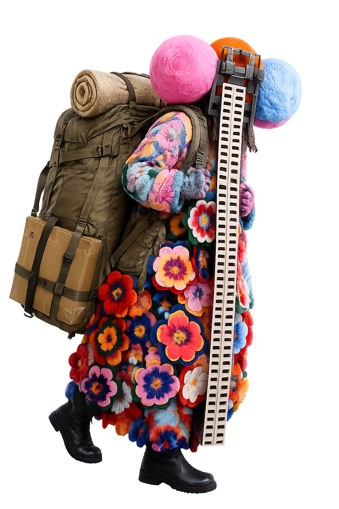
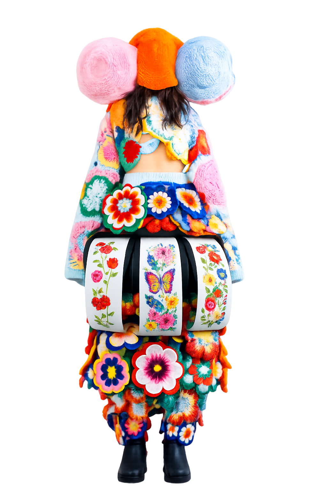

hi, I'm Anna

I was born and raised in Vietnam and moved to the United States at eighteen, carrying curiosity and excitement for a new journey. Leaving home alone taught me to embrace uncertainty, reshape myself, and see identity not as something fixed, but as something discovered through exploration. Art became my way of navigating that journey. It allows me to ask questions, to understand myself through making, and to imagine new ways of relating to the world.
artist statement
I make worlds to explore how we become who we are. My practice examines identity as a dynamic process — a persona continually formed through memory, performance, technology, and our interactions with others and the environments we inhabit. Working across interactive installation, sculpture, creative coding, and emerging technologies, I create participatory experiences that invite viewers to reflect on the multiple selves we construct, perform, and negotiate. As artificial intelligence and algorithmic systems increasingly mediate everyday life, my work investigates how these technologies participate in shaping contemporary identity, blurring the boundaries between the physical and digital, the personal and the computational.